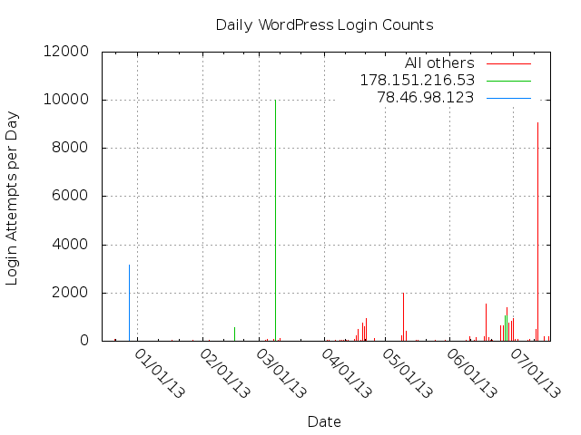
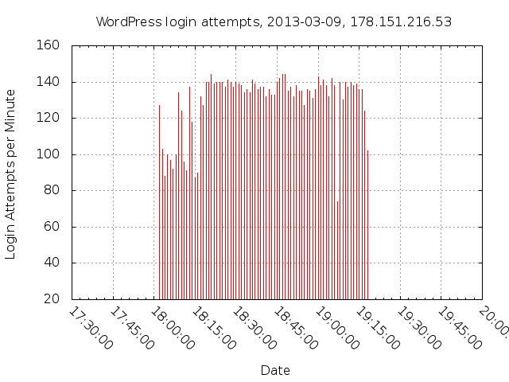
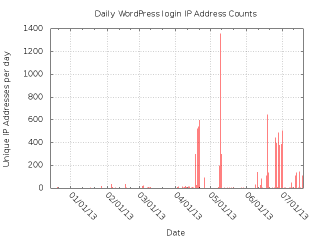
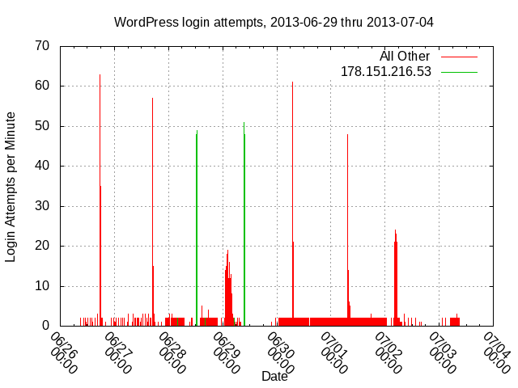

Obtaining Access
Access to WordPress administration happens solely by automated username and password guessing. --> Nobody used any WordPress exploits that I could detect.
Does any of this quantitative stuff make sense in light of letting any user ID/password combo come in? Except maybe as an example of how stupid the password guessers are.
Any evidence of someone guessing a weird password, and then coming back as a human to try it out? Also, scrounge up the access_log records of attempted exploits.
The programs used weren't terribly smart. Some of the guessing probably doesn't work on real WordPress installations, due to WordPress looking for certain cookies on login attempts. At least some of the automated guessers don't put appropriate cookies in their guess requests. The guessers typically keep on guessing even after getting a successful login, which amounts to a redirect to wp-admin/.
One guess contained a 5,105 character-long "password string" that's apparently a concatenation of all the passwords loaded into that guesser. The "password string" came from 202.179.22.211, which p0f says was running "Windows 2000 SP4, XP SP1+, 2003". Nothing in $_SERVER and $_REQUEST for that guess looks particularly unique. I have to believe that either someone botched the format of the candidate password file, or it was a particularly ineptly written guesser.
After I shut down the honey pot, my web server sill suffered through long sessions of guessing that just got 404s. The password guessing code doesn't even bother to check the HTTP response.
During the 2013-03-09 10,001 attempt guessing session, my server was not even running a WordPress honey pot, just a small PHP program invoked by wp-login.php URLs. This small program captured values of $_REQUEST, $_SERVER and $_COOKIE superglobals.
Single Machine Guessing Sessions
The graph shows some lengthy single machine guessing sessions: on 2012-12-29, 78.46.98.123 made 3155 login attemts between 17:34:52-07 and 23:09:24-07. I made mistakes collecting $_REQUEST, capturing only 41 passwords during this period. p0f says that 78.46.98.123 was a Linux machine (Linux 2.6 (newer, 3) or Mac OSX 10.3.1 (possibly FC 6, CentOS 5.x)) during this period. The user agent read "Mozilla/5.0 (X11; U; Linux i686; pt-BR; rv:1.9.0.15) Gecko/2009102815 Ubuntu/9.04 (jaunty) Firefox/3.0.15", apparently a user agent string used by real web browsers.
On 2013-03-09, 10001 login attempts, all from 178.151.216.53. 178.151.216.53 a Windows Vista or Windows 7 SP1 machine during this period, used HTTP 1.1 Connection: Keep-alive headers. It used a single TCP connection for each 101 requests. It made about 140 requests per minute.
It used an almost alphabetical list of passwords when guessing.
Multi-Machine Guessing Session
Some seemingly coordinated multi-machine guessing sessions occurred.
The time scale for this graph and the logins-per-day graph above ("Daily WordPress Login Counts") should be identical. Between the two, they demonstrate that different techniques get used.

2013-07-14, 9051 requests, 137 IP address making Almost all IP addresses identified as Windows XP, Vista or Windows 7 by p0f.
2013-08-03 - 2013-08-04 4283 requests, 530 IP address making at least 3 requests each. Almost all Windows XP, Vista or Windows 7, various SP levels. The user agent string read " Mozilla/5.0 (Windows NT 5.1; rv:11.0) Gecko Firefox/11.0".
Password Analysis
2013-03-09 single machine session used an almost alphabetical list of passwords. The same IP address used a non-alphabetical list of about 50 passwords twice, once 2013-06-28 and once on 2013-06-29.